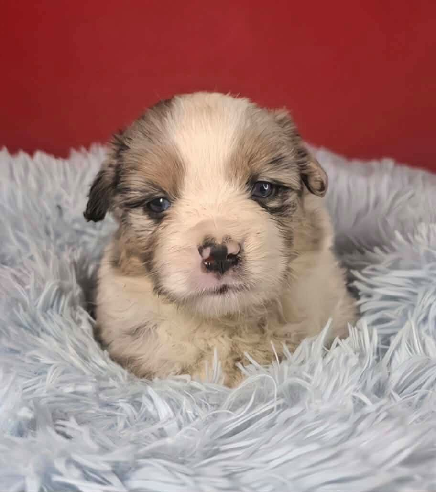

미니어처 아메리칸 셰퍼드(MAS) · 블루멀 · 블루아이 수컷 — 루카를 이해하기 위한 기본기
1960–70년대 미국 캘리포니아에서 작은 오스트레일리안 셰퍼드를 선별 번식해 만든 소형 목축견. 예전엔 "미니어처 오스트레일리안 셰퍼드"로 불렸고, 2015년 AKC가 정식 견종으로 인정했어. 몸집은 작아도 오지(Aussie)의 두뇌와 활동성을 그대로 가진 견종이야.
외모상 특징일 뿐이라 걱정 안 해도 돼. 다만 멀 유전 자체는 청력·시력과 관련이 있어서 아래 내용을 꼭 한 번 읽어줘.
목축견에 흔한 유전 변이로, 변이 1개만 있어도 특정 약에 심각·치명적으로 반응할 수 있어 (떨림·침흘림·식욕부진·실명 → 심하면 혼수·사망).
※ 위는 견종 일반 경향이야 — 루카가 다 가진다는 뜻은 아님. 정확한 건 브리더 검사 결과와 수의사 진단을 따르자.
1960~70年代のアメリカ・カリフォルニアで、小型のオーストラリアン・シェパードを選抜繁殖して作られた小型牧畜犬。 かつては「ミニチュア・オーストラリアン・シェパード」と呼ばれ、2015年にAKCが正式な犬種として認めた。 体は小さくてもオージー（Aussie）の頭脳と活動量をそのまま受け継いだ犬種。
見た目の特徴にすぎないので心配いらない。ただしマール遺伝そのものは聴力・視力に関わるので、下の内容を必ず一度読んでほしい。
牧畜犬に多い遺伝子変異で、変異が1つあるだけでも特定の薬に重篤・致命的に反応することがある （震え・よだれ・食欲不振・失明 → 重いと昏睡・死亡）。
※ 上記は犬種一般の傾向であり、ルカがすべて持つという意味ではない。正確な点はブリーダーの検査結果と獣医の診断に従おう。
일본 기준 · 예방접종 · 법적 의무 · 검진을 루카 날짜에 맞춰 관리
똑똑한 MAS에 맞춘 시기별 훈련 로드맵.
카테고리별 보유 현황 · 정기 보충 품목 관리 · 가격/링크는 일본 Amazon 기준
생후 2개월 아기 강아지와의 첫날부터의 일상 가이드.
반려견 지식을 주제별 개념으로 정리한 사전 · 키워드 검색 · 각 항목 끝의 링크는 근거가 된 출처 영상